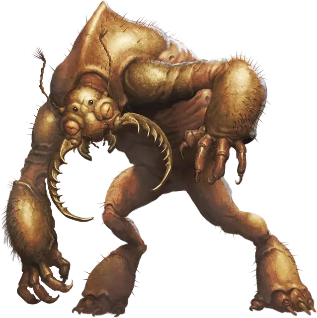

Бурый увалень
Umber Hulk
Большой Монстр, хаотично-злой

Класс Доспеха 18 (природный доспех)
Хиты 93 (11к10 + 33)
Скорость 30 футов, копая 20 футов
| мод | спас | ||
|---|---|---|---|
| СИЛ | 20 | +5 | +5 |
| ЛОВ | 13 | +1 | +1 |
| ТЕЛ | 16 | +3 | +3 |
| мод | спас | ||
|---|---|---|---|
| ИНТ | 9 | −1 | −1 |
| МДР | 10 | +0 | +0 |
| ХАР | 10 | +0 | +0 |
Чувства тёмное зрение 120 футов, чувство вибрации 60 футов, пассивное Восприятие 10
Языки Язык Бурых увальней
Опасность 5 (1800 опыта)
Бонус мастерства +3
Среда обитания Подземье
Особенности
Сбивающий с толку взгляд. Если существо начинает ход в пределах 30 футов от бурого увальня и при этом может видеть глаза увальня, бурый увалень может магическим образом заставить его совершить спасбросок Харизмы Сл 15, если он при этом дееспособен.
При провале спасброска существо не может совершать реакции до начала своего следующего хода, и бросает к8, чтобы определить, что оно будет делать в текущем ходу. При результате «1–4» существо ничего не делает. При результате «5–6» существо не совершает действий, а все перемещение тратит на то, что перемещается в случайном направлении. При результате «7–8» существо совершает одну рукопашную атаку по случайным образом выбранному существу, или не делает ничего, если в пределах досягаемости существ нет.
Если существо не захвачено врасплох, оно может отводить взгляд, чтобы не совершать спасбросок в начале своего хода. Если существо делает это, оно не видит бурого увальня до начала своего следующего хода, после чего может снова отводить взгляд. Если существо в этот период посмотрит на бурого увальня, оно тут же совершает спасбросок.
Прокладывание туннеля. Бурый увалень может копать сквозь сплошной камень со скоростью копания, уменьшенной вдвое, оставляя за собой туннель шириной 5 футов и высотой 8 футов.
Действия
Мультиатака. Бурый увалень совершает три атаки: две когтями, и одну жвалами.
Коготь. Рукопашная атака оружием: +8 к попаданию, досягаемость 5 футов, одна цель. Попадание: Рубящий урон 9 (1к8 + 5).
Жвалы. Рукопашная атака оружием: +8 к попаданию, досягаемость 5 футов, одна цель. Попадание: Рубящий урон 14 (2к8 + 5).
Описание
Отвратительные и ужасные бурые увальни из глубин земли роются в пещерных комплексах, подземельях или поселениях Подземья в поисках еды. Счастливчики, пережившие нападение бурого увальня, часто помнят слишком мало о произошедшем из-за заглушающего разум взгляда бурого увальня.
Обитатели окраин. Бурые увальни могут прорываться через твердый камень, образовывая целые туннели на своем пути. Крепкий как сталь хитин их тел может выдержать даже обвалы, обрушения туннелей и камнепады, обычно следующие за ними.
Закопавшись в стену пещеры или прохода, бурый увалень лежит и ждет существ, которые будут проходить мимо. Его усы-щупальца ощущают любое движение рядом. Когда он вырывается из своей засады в облаке земли и камня, его ничего не подозревающая добыча оборачивается к нему лицом, немедленно впадая в транс от его сбивающего с толку взгляда, вынужденная беспомощно стоять, пока его жвала защелкиваются на её глотке.
Заглушающий разум. Многие пережившие столкновение с бурым увальнем могут вспомнить лишь пару деталей нападения, потому что в момент нападения взгляд бурого увальня заглушает их разум. Те, кто бился и убивал бурых увальней, могут распознать некоторые признаки. Для обитателей Подземья о неведомом враге рассказывают пугающие сказки об исчезнувших исследователях и неожиданных обвалах. Бурые увальни обладают сверхъестественными способностями в этих историях. Мораль многих из них заключается в предупреждении: если вы заметили бурого увальня, бежать от него уже поздно.